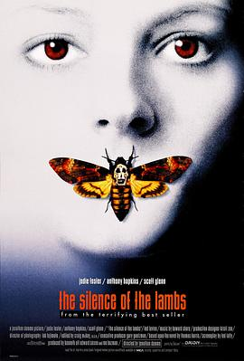

沉默的羔羊 / The Silence of the Lambs
太惊悚了，很多地方也不能理解 =。=
作品信息
| 导演 | 乔纳森·戴米 |
| 编剧 | 托马斯·哈里斯 / 泰德·塔里 |
| 主演 | 朱迪·福斯特 / 安东尼·霍普金斯 / 斯科特·格伦 / 安东尼·希尔德 / 布鲁克·史密斯 / 卡斯·莱蒙斯 / 弗兰基·费森 / 泰德·拉文 / 崔西·沃特 / 丹·巴特勒 / 达拉 |
| 类型 | 剧情 / 惊悚 / 犯罪 |
| 制片国家/地区 | 美国 |
| 语言 | 英语 |
| 上映日期 | 1991-02-14(美国) |
| 片长 | 118分钟 |
| IMDb | tt0102926 |
最后一次看到是 2026-08-01T11:06:48+10:00 · 豆瓣原页